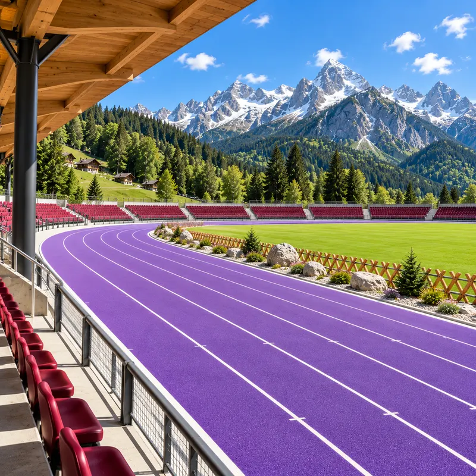

New features, performance updates, and everything happening with SwipeTrack.
v2.0.1
Mountain Stadium: race below the peaks
Reach level 20 and you'll leave the city behind for the mountains. 2.0.1 adds a brand-new stadium and a round of fixes from your first days with 2.0.

Mountain Stadium
A new six-lane stadium high in the mountains, for levels 20–29, with a purple track, a timber grandstand and snowy peaks on the horizon
Five rivals now line up with you, one more than in the City
The City Stadium gets a refreshed skyline, and daytime skies are brighter and clearer
Racing
The speed readout reacts faster, so you can see each stride pay off
New players' first 100m now really does start on its own after the 10-second countdown
Rankings & Runner
Rankings remembers the leaderboard you looked at last
Tapping a top speed, average speed or total distance rank alert opens that leaderboard
One Save button, pinned to the bottom of the Runner tab, saves your name and your look together
The level number now sits right in the middle of the level-up ring
v2.0.0
SwipeTrack 2.0: a whole new look, City Stadium & daily streaks
2.0 is the biggest update yet. Every screen has been redesigned, there's a new stadium to reach, and racing every day now pays off with bigger XP and new gear.
A new look everywhere
A darker, cleaner design with big numbers, stadium photos, and a color for every distance
Four tabs at the bottom: Run, Progress, Rankings, and Runner
Race cards show the stadium, your race level, your PB, the XP for a win, and your next goal
New icons throughout
City Stadium
A brand-new five-lane stadium in the middle of the city, for levels 10–19
Reaching a new stadium now gets its own moment, with the option to race there straight away
Daily streak
Finish one race a day to build a streak. Your bonus XP grows with it, from +10% on day 1 to +50% from day 6 on
Unlock the Flame shirt on day 3 and Gold shoes on day 7
An evening reminder lets you know when your streak is about to end
Racing
A new warm-up before each race shows which side to swipe next
A new race HUD: your place, time, distance to go, speed, stamina, and a dot for every rival
In races of 800m and longer, every 400m tells you how far ahead of or behind your PB pace you are
The race screens also work with your iPhone turned sideways
Results and level-ups
One new results screen with your place, time, world rank, and the XP you earned for each attribute
A PB now gets confetti
Attribute level-ups get their own full-screen moment that explains what improved
“Run again” shows the time you need to move up the world rankings
Progress, Rankings & Runner
Progress: your runner level, total races, distance and top speed, your four attributes, and a record for every distance with its world rank
Rankings: a podium for each distance and the runners just above and below you
Runner: pick your name, color your runner with a live preview, and link Sign in with Apple
Tapping a rank alert now opens that distance so you can race straight back
New players and reliability
New players start with a short welcome and go straight into their first 100m, then pick a name
If your connection drops at the finish, your race is saved and sent again, and your XP and rank fill in when it gets through
v1.3.2
A new race menu, a live runner preview & fresh outfit colors
v1.3.2 makes it easier to pick your next race and to make your runner your own. Every distance now shows what you can win, and the Customize tab shows your runner in 3D as you change it.
A new race menu
Swipe left and right through the distances, from 100m to 10000m. The game remembers the last one you picked.
Each race card shows the stadium, your race level, your PB, and the XP for 1st, 2nd, and 3rd place
A goal for every race: unlock the next stadium, reach a new attribute level, or the time you need to move up the world rankings
A new bottom navigation bar with icons
See your runner before you save
The Customize tab now has a live 3D preview of your runner
Drag the preview to turn your runner around
Colors update right away, and nothing changes until you tap Save
New outfit colors
New bright clothing colors: yellow, hi-vis green, red, and blue
New everyday colors: beige, olive, and khaki
Shoes now keep their own color and no longer pick up the tint of your shirt or shorts
Updated skin tones and a more natural red hair color
Smoother racing
Motion blur now builds up more gradually with speed
The track and your rivals blur at speed, while your own runner stays sharp
A retuned daytime sky with softer, more natural light
Friendlier first races
After your first race, a short tip points you to where you can customize your runner
We now ask you to pick a display name only when you reach the global Top 10, so your name shows up where it counts
v1.3.1
Into the forest: a new stadium and sharper racing
Stadium progression takes its next step in v1.3.1. Reach level 5 and leave the Meadow for a purpose-built four-lane venue surrounded by grandstands, trees, and deep forest green.
The Forest Stadium
A completely new four-lane stadium for levels 5–9
Track markings and staggered starts aligned for every race distance, from 100m to 10000m
New forest scenery, trackside structures, seating, and materials give the venue its own atmosphere
A sharper race feel
Quicker, more natural acceleration for you and your rivals
Rebalanced speed, stamina, fatigue, rival pacing, and progression
Smoother camera response and refined start and running animation blends
A better first run
A hands-on swipe check before the countdown lets you practise both directions before the race begins
The 100m is now gently highlighted for brand-new runners
Leaderboard entries now show the relevant race or attribute level
Reliability fixes
Improved race-result recovery when a completed race needs to refresh its saved state
Fixed an iOS issue that could prevent Sign in with Apple from returning to the game
Clearer account error messages and more consistent XP rewards between the game and server
v1.3.0
Female runner, a brand-new animation system & the pain of the final lap
This is the biggest visual update since launch. Your runner no longer just moves down the track — they set up on the line, launch out of the start, change form as the race grinds them down, and react when they cross the finish.
Choose your runner
New female runner model — pick MALE or FEMALE in Personalization
All existing shirt, pants, shoes, skin, and hair colors work on both runners
Your choice is saved to your account and syncs across devices
A completely rebuilt animation system
Dedicated on-your-marks stances and start launches — sprint starts are explosive, distance starts are controlled
Separate sprint and distance running styles that blend automatically based on your event and current speed
Fatigue now shows in the form: as stamina drains, posture breaks down and the stride gets heavy
Stride cadence is matched to real velocity, so there's no more foot sliding at any pace
New finish reactions — a victory run and celebration for a win, exhaustion or recovery for everyone else
AI rivals use the exact same animation system, including their own finish reactions and placings
Feel the exhaustion
Vision darkens and tunnel-visions in as your stamina empties — hang on to the line
The screen blurs as accumulated fatigue peaks late in long races
Subtle brightness lift at top speed to sell the pace
Leaderboards & progression
New "Around You" leaderboard view — if you're outside the top 5, you now see the runners directly above and below you instead of an unreachable top 10
Your global rank now shows as position out of total runners
Rebalanced XP rewards, especially for 3000m, 5000m, and 10000m
Fixes & polish
Corrected lane line alignment on the Meadow stadium track
Runners now sit properly on the track surface instead of floating
Expired sessions refresh automatically instead of failing a sync
The sync retry button now works when the connection failed during startup
Refreshed navigation icons, leaderboard dropdown, and Personalization layout
New SwipeTrack guest accounts keep progression synchronized with our game service — no Apple login required
Optional Sign in with Apple linking for reinstall and cross-device account recovery
Custom public display names and runner colors for shirt, pants, shoes, skin, and hair
Authoritative race results and progression with safer recovery from interrupted submissions
Unified global leaderboards preserving existing rankings during our PlayFab-to-Supabase transition
Optional push notifications when another runner knocks you down the leaderboard
Permanent in-app account deletion and refreshed Profile, header, and bottom navigation
Android
Android early access is here
SwipeTrack is no longer iPhone-only. We’ve opened Android closed testing via Google Play. The full game — all 8 distances, AI rivals, progression, and global leaderboards — is available to early access testers.
How to join: Submit your Google Play email on our Android Early Access page and we’ll add you to the closed testing group. You’ll receive a Google Play invite within 48 hours.
This is a real early access — expect occasional rough edges. Your feedback helps shape the final Android release.
v1.1.1
Performance & landscape mode
Performance improvements across the board
In-game landscape resolution for a wider view and better gameplay
Version number now displayed on the stats page
Global ranking total display added
New achievement screen for reaching a new global ranking position post-race
Various bugfixes
v1.1.0
3000m, stadium tribunes & progression overhaul
Added 3000m distance
Better track markers for clearer navigation
10 different stadium tribunes based on your run level